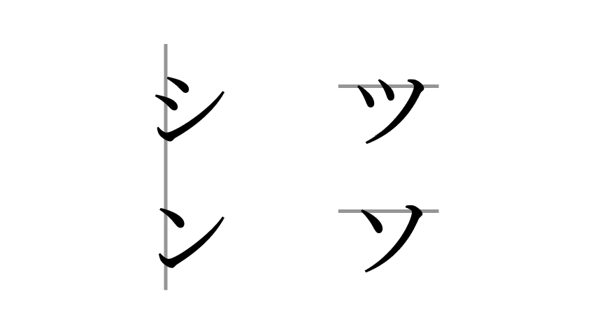

カタカナ - Katakana
Katakana là một bộ chữ khác dùng để kí âm một tập âm tương tự Hiragana.
| n | w | r | y | m | h | n | t | s | k | ||
|---|---|---|---|---|---|---|---|---|---|---|---|
| ン(n) | ワ | ラ | ヤ | マ | ハ | ナ | タ | サ | カ | ア | a |
| ヰ* | リ | ミ | ヒ | ニ | チ(chi) | シ(shi) | キ | イ | i | ||
| ヱ* | ル | ユ | ム | フ(fu) | ヌ | ツ(tsu) | ス | ク | ウ | u | |
| レ | メ | ヘ | ネ | テ | セ | ケ | エ | e | |||
| ヲ(o)* | ロ | ヨ | モ | ホ | ノ | ト | ソ | コ | オ | o |
* hiếm khi dùng hoặc không còn dùng
Vì tiếng Nhật không có dấu cách, nên thi thoảng người ta sử dụng 「・」 để ngăn cách các từ như 「ロック・アンド・ロール」 rock and roll. Sử dụng ký tự này là tùy chọn nên nhiều khi sẽ không dùng gì cả để ngăn cách.
Ghi chú
- Chữ「ヲ」rất hiếm khi sử dụng, nên quên nó đi cũng được. Trừ khi nếu bạn muốn đọc văn bản cũ, thì nó cần thiết hơn.
- Các chữ 「シ」、「ン」、「ツ」、và 「ソ」rất giống nhau. Ta có thể phân biệt 4 ký tự này qua hình dưới. 
- Các chữ「ノ」、「メ」、「ヌ」 và 「フ」、「ワ」、「ウ」 cũng na ná nhau, cần lưu ý.
Trường âm
Để biểu thị trường âm, dùng dấu gạch ngang dài 「ー」với cách viết ngang, gạch dọc với cách viết dọc.
Ví dụ
- ツアー (Tsuā) : Tour
- メール (Mēru) : Mail
- ケーキ (Kēki) : Cake
Chữ ghép
Để biểu âm cho các âm không có trong tiếng Nhật, người ta ghép 1 chữ Katakana với một chữ Katakana nhỏ 「ァ、ィ、ゥ、ェ、ォ」 và thêm thắt như sau (nhưng ô để trống là những ô không ghép được):
| v | w | f | ch | d | t | j | sh | |
|---|---|---|---|---|---|---|---|---|
| ヴァ | ワ | ファ | チャ | ダ | タ | ジャ | シャ | a |
| ヴィ | ウィ | フィ | チ | ディ | ティ | ジ | シ | i |
| ヴ | ウ | フ | チュ | ドゥ | トゥ | ジュ | シュ | u |
| ヴェ | ウェ | フェ | チェ | デ | テ | ジェ | シェ | e |
| ヴォ | ウォ | フォ | チョ | ド | ト | ジョ | ショ | o |
Những chữ tô đậm là thêm thắt, còn lại là có sẵn trước đó.
Mặc dù sáng chế ra một hàng ヴ như kia, nhưng nhiều người Nhật vẫn sẽ đọc /v/ thành /b/. Ví dụ như ボリューム (bolyūmu/volume).